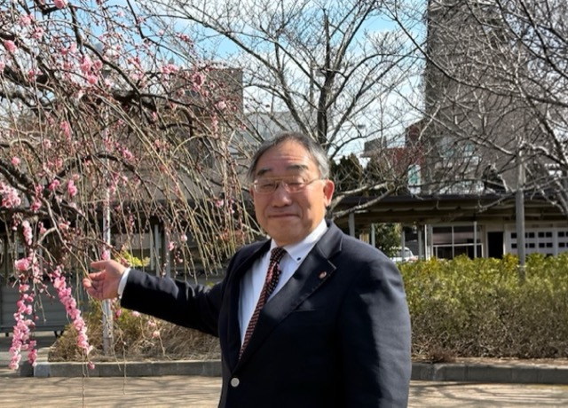
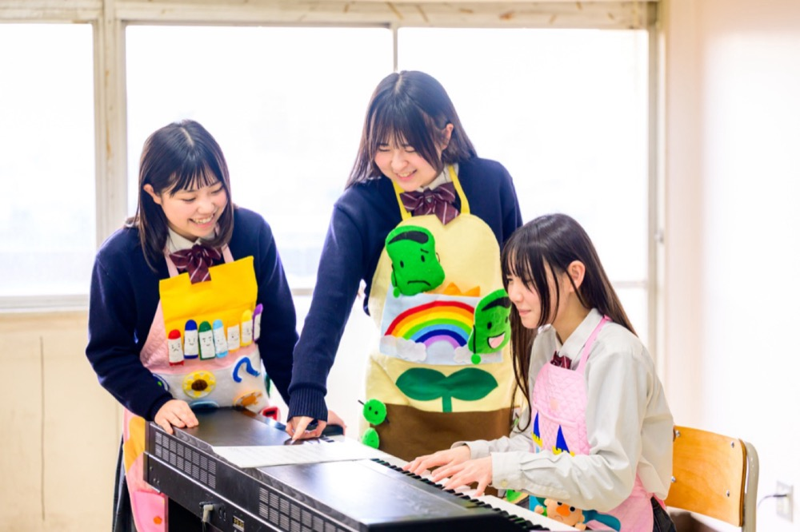
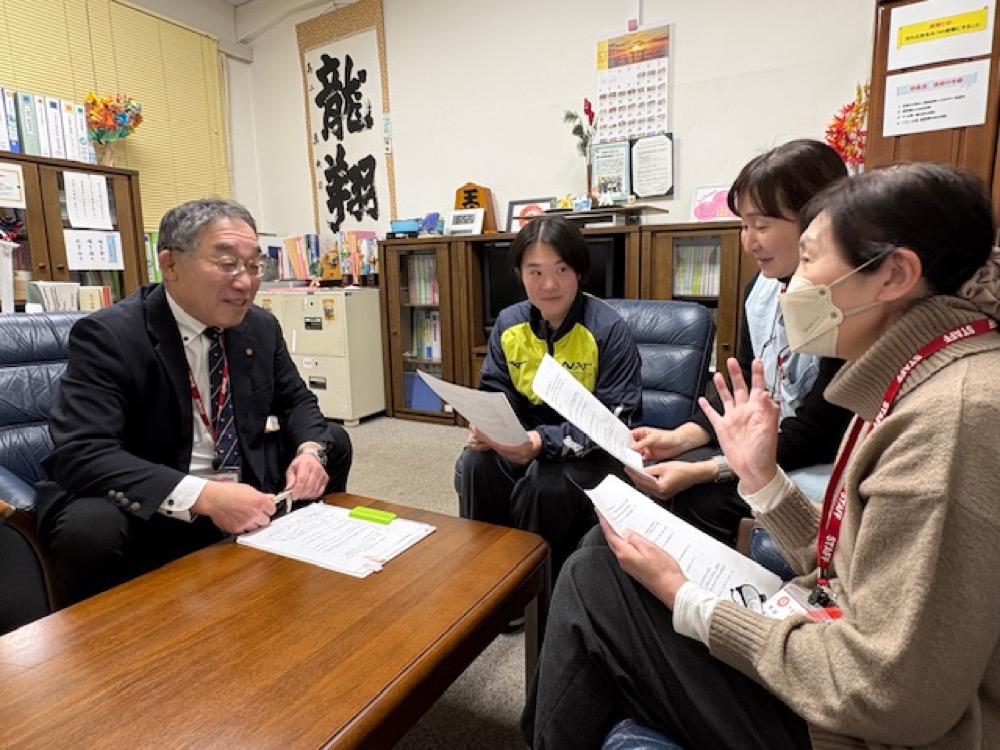
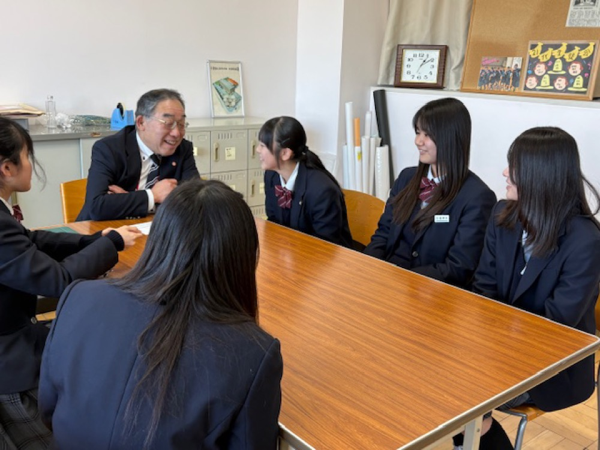
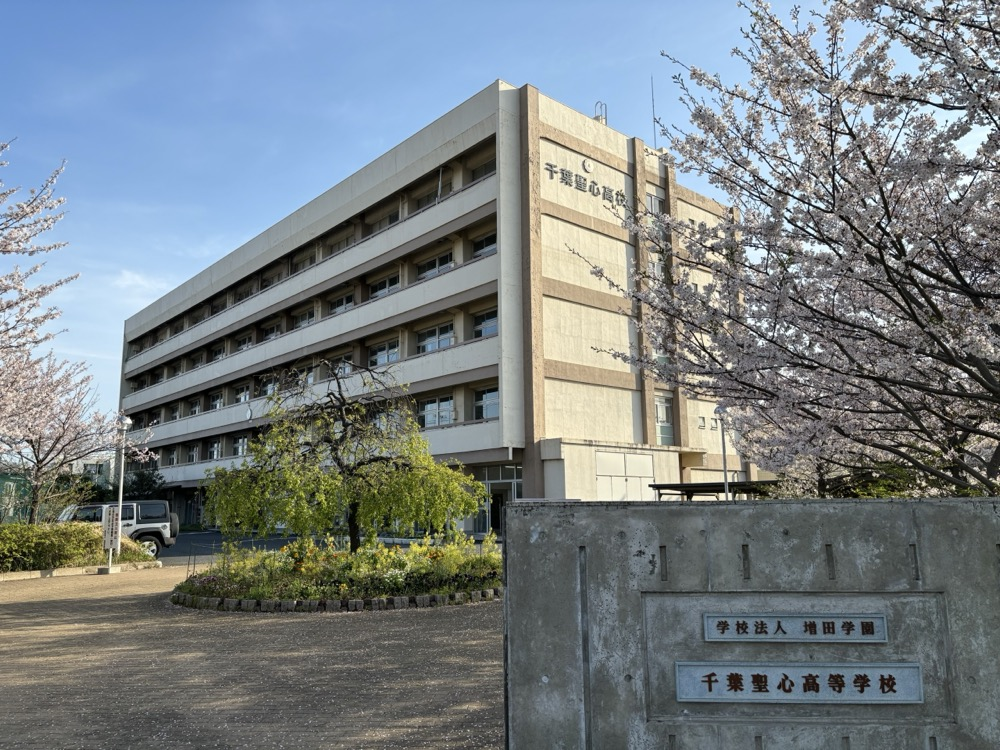

受け継がれる「聖心・努力・奉仕」の精神
三浦 勤治Kinji Miura
学校法人増田学園 千葉聖心高等学校 校長
1957年、山形県鶴岡市生まれ。 学生時代に打ち込んだ柔道を通じて「人を育てること」への情熱を抱き、教育の道を志した。順天堂大学卒業後は、千葉県船橋市の公立中学校教諭、県教育委員会や公立中学校・高等学校の校長、2018年より現職を務める。厳しさの中にも深い愛情を持って生徒や教職員と向き合うことを信条として公立学校での豊富な経験と、私学ならではの柔軟な発想を融合させ、「生徒が自信を持ち、笑顔で卒業できる学校づくり」にその手腕を振るっている。
企業サイトを見るTRACK 01
受け継がれる「聖心・努力・奉仕」の精神

千葉聖心高等学校の歴史は昭和22年に創立された千葉洋裁学院に遡る。学祖・増田うめ先生が掲げた建学の精神「聖心・努力・ 奉仕」は今日に至るまで同校の教育の根幹を成している。特に「努力」という言葉には学祖自身の原体験が深く刻まれている。学祖の父は娘の将来を見据え、精神力と強い根性を養うために毎晩長時間の自己学習を課したという。「父の教育の力が現在の私に精神力、忍耐力、そして努力等を養ってくれた」と学祖が述懐するように、この精神は今の生徒たちにも脈々と受け継がれている。
三浦校長は「二十一世紀を逞しく生きる個性豊かな女性を育成するためには、信頼関係の構築や善悪を判断する力、そして道徳心と教養が不可欠です」と語る。礼儀正しさや日常の立ち居振る舞いを重んじ、「凡事徹底」を合言葉に、挨拶が自然に交わされ、笑顔が絶えない温かい学校づくりを推進している。
TRACK 02
系列校の千葉女子専門学校との連携教育

同校の大きな特色の一つが、系列校である千葉女子専門学校との連携教育だ。特に保育者育成においては県内でも稀有な強みを持つ。千葉女子専門学校は、千葉県内で唯一2年間で、幼稚園教諭と保育士の二つの国家資格を国家試験を受験することなく卒業と同時に取得できる認定校である。
「近年は幼保連携型認定こども園が増加しており、幼稚園教諭と保育士の両方の資格を持つことが就職において大きなアドバンテージとなります。本校の生徒は、高校時代から附属のこども園や系列の保育園で実習を行うことができ、専門学校進学後もスムーズに学びを継続し、深めることができます」と三浦校長は胸を張る。
生徒は2年次から「こども保育コース」「進学コース」「総合コース」を選択できる。特に「こども保育コース」では、保育の専門性をしっかりと身につけられる。2・3年次で行われる実習では、実際の現場に触れながら学べる点が大きな特徴である。保育に関する専門科目がカリキュラムに豊富に設定され、子どもの発達理解や保育技術を段階的に習得できる。また、保育検定にもチャレンジできる環境が整っており、資格取得を目指す生徒をしっかりサポートしている。全国家庭科部会で行われている保育検定1級取得者が、県内1位であることも自慢の一つであり、実践力と資格取得の両方を重視した学びができる学校である。


TRACK 03
「対話を大切にし」「寄り添う」教育
教員は生徒に積極的に声をかけ、生徒の小さな変化やサインを見逃さない。生徒一人ひとりのペースや背景を尊重し、教員が答えを示すのではなく、生徒自身が考え自分で判断し実践する方向へと導くことを尊重する。学校は知識を与える場であると同時に、自ら考え、成長していく場でもある。だからこそ、生徒が卒業後に自立して歩んでいけるよう、学びのプロセスを支える存在として教員が寄り添うことが重要になる。
本校のアドミッションポリシーとして、「高校生活を頑張る生徒、自分を変えたい生徒」の希望の門戸を広げ、入学後は「リスタート」の場として全力でサポートする。「一人でも多くの生徒に『この学校に入学してよかった』多くの保護者に『この学校に通わせてよかった』と思ってもらえる学校でありたい。生徒が笑顔で生き生きと活動する姿を見ることが私たち教員にとって何よりの喜びです」と三浦校長は目を細める。